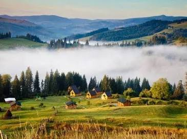

Україна — це край несягненної краси, де золото пшеничних піль зустрічається з безкрайнім синім небом. Це любов, що починається з батьківського порогу, затишного шелесту калини під вікном і співу солов’я у травневому садку.
